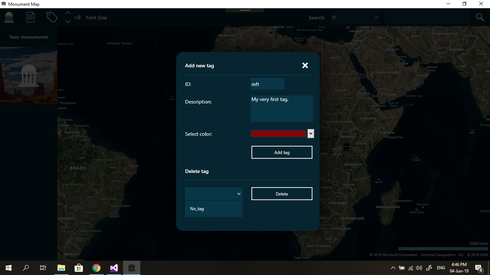

Firstly, you have to click on the "Manage tags" icon located in the upper left corner of your screen. The icon looks like this: If you are feeling lazy, use the "ALT + T" shortcut. Once you do that, the following window will pop up:

You must fill out all the tag data in order to add it. After adding a tag, you can tag your monuments with it.
If you wan't to delete a tag, simple select one from the box and click on delete. Keep in mind that you can not delete
the default tag, and that you can't delete a tag used by another monument.